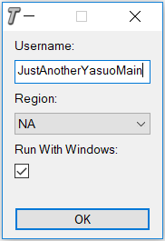

Windows Desktop App
A simple script to automatically open up and run tiltseeker when a League game starts.

Download
Use:
-Unzip Tiltseeker.zip to your preferred install location
-Run Tiltseeker.exe
-Set Username and Region
-Play League
Features:
-Opens automatically
-Remembers configuration
-Starts with Windows (optional)
-Uses default browser
Hashes
MD5: ecb515645a4341fca15b468217e78236
SHA256: 7c6376f6f047c3c86cbccf74c1eb74
9b2105d221398113a015114e1a7a1b2f43